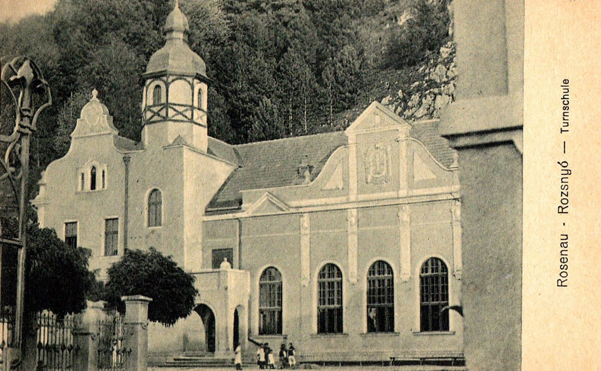
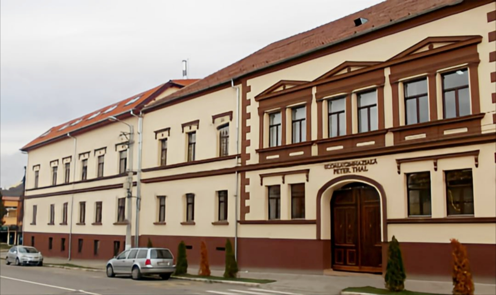

Putem spune cu mândrie că începuturile învăţământului râşnovean se identifică
nemijlocit cu începuturile şcolii noastre, de aceea prezentăm mai jos, pe scurt, istoria şcolii noastre:
1508 - s-au construit primele "case şcolare" situate vis-a-vis de casa parohială a Bisericii Evanghelice, astăzi sala de sport a Şcolii Generale Nr. 2
1668 – extinderea acestor case
1787 (3 iunie) – incendiul din acea zi arde casele din "colţul şcolii"
1793 – construirea unei şcoli cu două clase
1794 – i se ataşează două locuinţe a câte trei camere pentru învăţători
1841 (12 iunie) – un incendiu arde şcoala
1842 – reconstruirea şcolii cu 5 săli de clasă
1871 – se adaugă trei săli de clasă supraetajate.
– denumirea şcolii era de "Şcoala Evanghelică Săsească"
1943 (14 mai) – şcoala devine laică
1944 – trece în proprietatea statului român
1945 – se înfiinţează şi o şcoală românească în paralel cu cea germană
1956 – primul liceu din Râşnov care a funcţionat în clădirea Şcolii Germane până în 1968
1968 – titulatura şcolii se schimbă în Şcoala Generală Nr.2 Râşnov
2012 – titulatura şcolii se schimbă în Şcoala Gimnazială Nr.2 Râşnov
2013 – titulatura şcolii se schimbă în Şcoala Gimnazială Peter Thal

